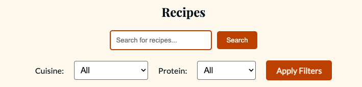
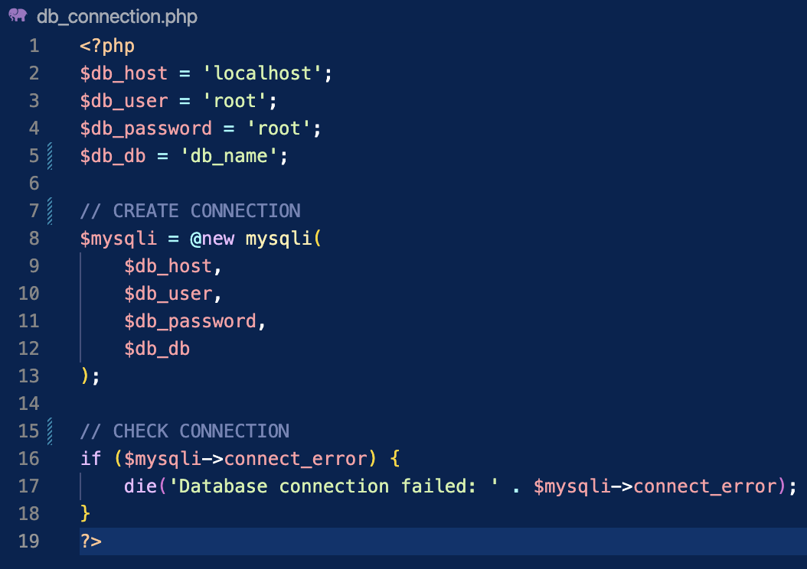
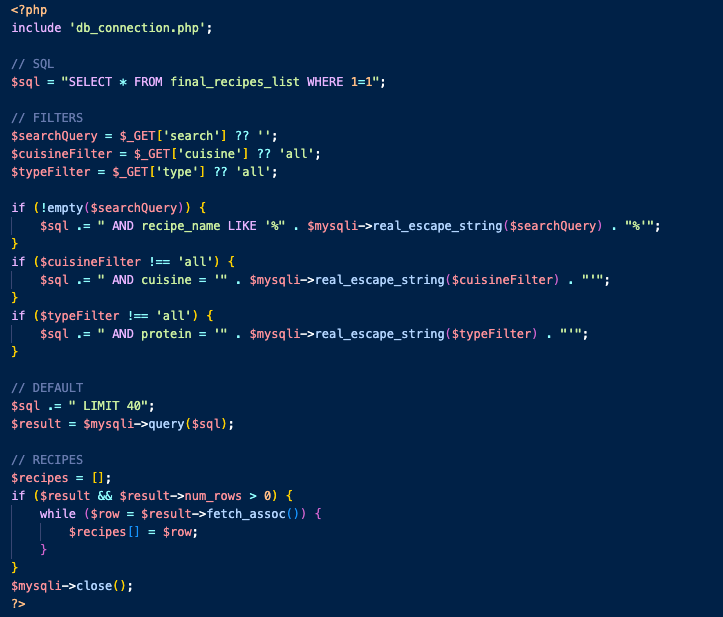

This case study explores the development of a dynamic website for an online cookbook featuring 40 recipes. The primary challenge was to enhance the user experience by replacing individual HTML pages with a more streamlined and organized solution. Utilizing MySQL and PHP, I created a unified recipes page equipped with a functional search engine and filtering system. Developed in VSCode and managed through GitHub, the "Recipe Book" website highlights effective content accessibility and demonstrates thoughtful design combined with technical proficiency in back-end database integration.
My final project for IDM232 focuses on building a recipe website using MySQL and PHP. Conducted as a solo effort, the project is part of a Web Design class taught by Professor Philip Sinatra. Over the course of 10 weeks, only three assignments helped in the production of my final project:
The project operated on a zero-cost budget, aligning with its goal to provide students hands-on experience with modern design theories and back-end scripting languages. This project also fulfilled the class's learning objectives by handling user input, managing databases, and implementing advanced authentication features. Through this process, I gained a comprehensive understanding of server-side programming principles and effectively utilized modern development tools.
The provided ZIP file of recipes and text was overwhelming for students like me learning database operations for the first time. Transitioning to PHP and MySQL after a year of focusing exclusively on front-end development with HTML, CSS, and JavaScript was a steep learning curve. Questions like, "How is it possible to code this?" and "Can I realistically complete 40 individual recipe pages within 10 weeks?" frequently popped into my head. This dilemma highlighted my difficulty in understanding server-side programming concepts while managing a large volume of unstructured content. The files were disorganized, with unoptimized images and grammatical errors in the descriptions, further complicating the process.
The success of this project relied on delivering an efficient user experience while advancing my skills from a novice learner to a more confident developer of MySQL and PHP. To achieve these positive outcomes, I established a clear set of goals to guide the creation of my "Recipe Book" website. First, I aimed for streamlined organization to ensure users could easily access all the recipes in one centralized location—the "Recipes" page. Additionally, I implemented a functional search engine with filters for "Cuisine" and "Protein," allowing users to narrow down their options to better find what they were looking for. These were just a couple of the tangible objectives I strived to accomplish. By enhancing the user experience through easy navigation and engaging features, I addressed the project's goals and improved my ability to implement back-end programming.
The target audience for this project includes anyone interested in online recipe books, from beginner cooks to experienced chefs. To meet their needs, I focused on creating an accessible and user-friendly platform. Accessibility was a key priority, hence features like a "Help" page, a search bar for quick recipe access, filters for narrowing results, and the ability to independent scrol for easy self-browsing. Additionally, three featured recipes on the home page provide users with a convenient starting point.
Establishing a database connection between PHP and MySQL was essential to making the "Recipe Book" website dynamic and interactive. This connection enabled PHP scripts to retrieve, filter, and display recipe data in real-time. By specifying the database host, username, password, and name, I created the connection using the new mysqli function, with error handling to catch any issues.
After connecting the database, I created a separate database connection file (db_connection.php) to ensure reusable code for the "Recipes" page and the "Recipe - Details" page. The first SQL query (SELECT * FROM final_recipes_list) fetches all recipes and is adjusted based on user inputs through search functions or selected filters. The real_escape_string function is used to protect against SQL interception. Filters are applied only when specified, ensuring the query remains efficient. The results stored in an array, making it easy to display the filtered recipes dynamically on the website.
The "Recipe Book" website was designed to provide a user-friendly and accessible experience for anyone looking for recipes online. The site features a clean navigation structure with a home page showcasing three featured recipes, a search bar, and filtering options for "Cuisine" and "Protein," making it easy for users to find exactly what they need. The site is fully responsive, offering a seamless experience across all devices. The design focuses on simplicity and readability, using clear typography and a neutral color scheme to keep the focus on the content. Features like touch-friendly navigation and optimized images enhance usability and performance. This project demonstrates the importance of combining strong UX principles with technical development to create an efficient and engaging website.
In conclusion, this 10-week project was a success. I met the necessary requirements to achieve my Final Project. I developed better time management skills and understood the significance of deadlines on a professional level. Academically, I also my technical skills in back-end programming and database management which I had no experience prior to taking this class.
Reflecting on this 10-week process, I realize it could have been more efficient if I had consistently documented and tracked the feedback I received. This would have allowed me to better evaluate my progress from the beginning of the project to its completion. Adopting a structured cycle of research, testing, designing, and development would have provided more user perspectives through surveys and other research methods, further enhancing the final outcome.